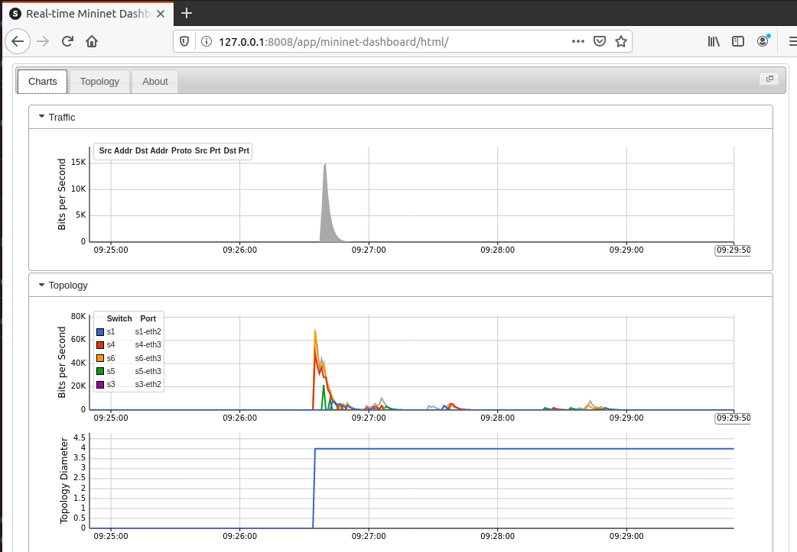

工具选择列表
操作系统：ubuntu_19.10
数据平面（虚拟交换机）：OpenvSwitch（OVS）
控制器：ryu
mininet组网工具：mininet是一个用python实现的，可以很快地模拟出OpenFlow交换机（基于Openvswitch）、host以及自定义各种网络拓扑结构。提供命令行CLI和python的API
sflow-rt：sFlow技术是以设备端口为基本单元的数据流随机采样的流量监控技术。sflow分为sflow agent和sflow collector, sflow agent内嵌在网络设备中将采集的信息封装成sFlow报文发送给sflow collector， sflow-rt为 sflow collector实现的一种工具。
…
下载系统，安装，更换源
清华镜像源下载 ubuntu desktop 19.10
VMware安装…
安装之后首先更换源1
sudo vi /etc/apt/sources.list
改成：
1 | #阿里云源 |
然后更新系统和软件仓库:
1 | sudo apt update |
首先安装的软件是vim, 并且设置vim配置1
2sudo apt install vim vim-gtk
sudo vim /etc/vim/vimrc.local
添加以下内容
1 | syntax on |
安装依赖：
1 | sudo apt install ssh net-tools python python-pip m4 autoconf libtool git |
安装mininet
1 | sudo apt install mininet |
然后测试
1 | yb@ubuntu:~$ mn --version |
安装OpenvSwitch
从官网下载最新版本：
1 | wget https://www.openvswitch.org/releases/openvswitch-2.12.0.tar.gz |
启动：1
2export PATH=$PATH:/usr/share/openvswitch/scripts
ovs-ctl start
配置数据库：1
2sudo mkdir -p /usr/local/etc/openvswitch
sudo ovsdb-tool create /usr/local/etc/openvswitch/conf.db /usr/share/openvswitch/vswitch.ovsschema
初始化数据库：1
sudo ovs-vsctl --no-wait init
最后查看安装状态：1
2
3
4yb@ubuntu:/var/run/openvswitch$ sudo ovs-vsctl show
0e0bf153-77d4-43ff-9795-5085d959712e
ovs_version: "2.12.0"
yb@ubuntu:/var/run/openvswitch$
安装Ryu
安装之前
安装之前需要注意pip下载的包的位置的问题：
pip下载的时候会保存到用户的 ~/.local/lib/python2.7/site-packets，而当用sudo 运行的时候，包的位置没有包含这个位置，所以就会报错。
可以用python -m site看到：
1 | yb@ubuntu:~/Downloads$ python -m site |
将ENABLE_USER_SITE的值改为False，即NABLE_USER_SITE = False.
修改后就可以安装了，这里选择从github上面获取1
2
3
4git clone https://github.com/osrg/ryu.git
cd ryu
pip install -r tools/pip-requires #安装依赖
sudo python setup.py install
装完之后可以输入命令ryu-manager查看是否安装成功
安装sflow-rt
首先需要安装java环境
1 | sudo apt install openjdk-8-jre-headless openjdk-8-jdk-headless |
然后下载安装sflow-rt1
2
3
4wget https://inmon.com/products/sFlow-RT/sflow-rt.tar.gz
tar -zxvf sflow-rt.tar.gz
cd sflow-rt
./start.sh # 启动
然后访问 127.0.0.1:8008/ 可以看到sflow的监控页面，安装成功
可以选择安装sflow-rt的app，可以看官网https://sflow-rt.com/download.php 对每个app的介绍1
2
3./get-app.sh sflow-rt flow-trend
./get-app.sh sflow-rt mininet-dashboard
./get-app.sh sflow-rt ix-metrics
至此工具安装完成
mininet安装目录：/usr/lib/python2.7/dist-packages/mininet
Ryu安装目录：/usr/local/lib/python2.7/dist-packages/ryu
(可以直接用pip show modules 命令查看安装位置)
sflow-rt安装目录就是解压的目录
搭建一个简单的SDN网络
首先启动sflow-rt监控1
(path_to_sflow-rt)/start.sh
然后启动ryu的内建app：1
ryu-manager (path_to_ryu)/app/simple_switch_13.py
最后用mininet组网，设置控制器为ryu（默认端口6653或6633），openflow版本为1.3，交换机为ovs。
1 | sudo mn --switch ovs,protocols=OpenFlow13 --controller=remote,ip=127.0.0.1,port=6653 --custom sflow-rt/extras/sflow.py --topo=tree,depth=3,fanout=2 |
pingall，可以看到创建成功1
2
3
4
5
6
7
8
9
10
11
12
13
14
15
16
17
18
19
20
21
22
23
24
25
26
27
28
29
30
31b@ubuntu:~$ sudo mn --switch ovs,protocols=OpenFlow13 --controller=remote,ip=127.0.0.1,port=6653 --custom sflow-rt/extras/sflow.py --topo=tree,depth=3,fanout=2
*** Creating network
*** Adding controller
*** Adding hosts:
h1 h2 h3 h4 h5 h6 h7 h8
*** Adding switches:
s1 s2 s3 s4 s5 s6 s7
*** Adding links:
(s1, s2) (s1, s5) (s2, s3) (s2, s4) (s3, h1) (s3, h2) (s4, h3) (s4, h4) (s5, s6) (s5, s7) (s6, h5) (s6, h6) (s7, h7) (s7, h8)
*** Configuring hosts
h1 h2 h3 h4 h5 h6 h7 h8
*** Starting controller
c0
*** Starting 7 switches
s1 s2 s3 s4 s5 s6 s7 ...
*** Enabling sFlow:
s1 s2 s3 s4 s5 s6 s7
*** Sending topology
*** Starting CLI:
mininet> pingall
*** Ping: testing ping reachability
h1 -> h2 h3 h4 h5 h6 h7 h8
h2 -> h1 h3 h4 h5 h6 h7 h8
h3 -> h1 h2 h4 h5 h6 h7 h8
h4 -> h1 h2 h3 h5 h6 h7 h8
h5 -> h1 h2 h3 h4 h6 h7 h8
h6 -> h1 h2 h3 h4 h5 h7 h8
h7 -> h1 h2 h3 h4 h5 h6 h8
h8 -> h1 h2 h3 h4 h5 h6 h7
*** Results: 0% dropped (56/56 received)
mininet>
ryu-manager的控制台输出packet in 包
访问本地的 127.0.0.1:8008 ，可以用sflow的app mininet-dashboard看到拓扑和流量监控：

至此简单的SDN实验环境搭建完成。
（附：ubuntu server18.04.4版本安装）
其实这些工具都用不到图形界面的，所以说安装server是最省资源的方法。
首先从清华镜像源下载ubuntu18.04.4-server.iso,用vmware新建虚拟机安装
安装的时候会选择源，将默认的改成 http://mirrors.aliyun.com/ubuntu/ 即可。
安装后先修改字体（控制台字体太小了，看不清），当然，一直用ssh远程访问也行。1
sudo dpkg-reconfigure console-setup
弹出之后依次选择 UTF-8，latin1 and latin5 -western Europe and Turkic languages字体，terminusBlod，大小为 11*22 或者别的即可.
安装依赖1
sudo apt install vim gcc ssh net-tools python python-pip python-dev m4 autoconf libtool git openjdk-8-jre-headless openjdk-8-jdk-headless uml-utilities python-qt4 python-twisted-conch debhelper python-all
配置vim:sudo vim /etc/vim/vimrc.local
添加：1
2
3
4
5
6
7
8
9syntax on
set smartindent
set cindent
set autoindent
set tabstop=4
set shiftwidth=4
set softtabstop=4
set number
set hlsearch
配置python包位置：sudo vim /usr/lib/python2.7/site.py
将line76 ， ENABLE_USER_SITE = None 改为 ENABLE_USER_SITE = False
安装mininet：sudo apt install mininet
安装sflow-rt：1
2
3
4
5
6
7wget https://inmon.com/products/sFlow-RT/sflow-rt.tar.gz
tar -zxvf sflow-rt.tar.gz
cd sflow-rt
./get-app.sh sflow-rt flow-trend # 安装app
./get-app.sh sflow-rt mininet-dashboard
./get-app.sh sflow-rt ix-metrics
./start.sh # 启动
安装ryu：1
2
3
4git clone https://github.com/osrg/ryu.git
cd ryu
pip install -r tools/pip-requires #安装依赖
sudo python setup.py install
安装ovs：
1 | wget https://www.openvswitch.org/releases/openvswitch-2.12.0.tar.gz |
最后查看安装状态：1
2
3
4
5yb@sdn-server:~$ sudo ovs-vsctl show
[sudo] password for yb:
fd6b05e7-0737-4230-9c6e-9d8b71816e02
ovs_version: "2.12.0"
yb@sdn-server:~$